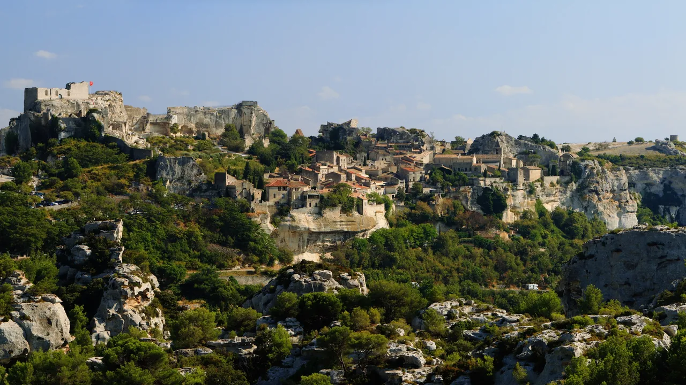
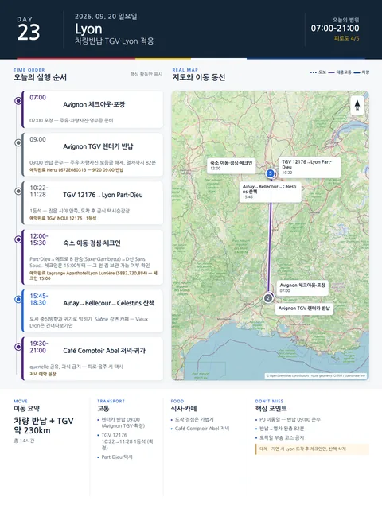

Day 23 · 9/20 일 · Lyon

오늘의 주요 장소

P0 연결거점 이동양쪽 챕터
- 핵심 실행
- 주유·반납·TGV
- 권장 출발
- 07:00 포장
- 완충
- 열차 60–90분 전 반납완료
시간표
Lyon
| 시간대 | 일정 | 실행 포인트 |
|---|---|---|
| 오전 | Avignon TGV 렌터카 반납 | 주유·차량사진·영수증·보증금 해제절차 확인 |
| 10:20–12:30 범위 | TGV로 Lyon Part-Dieu 이동 | 열차 20분 전 승강장권 진입, 짐은 시야 안쪽에 둔다 |
| 도착 후 30–45분 | Part-Dieu→숙소 택시 | 큰 짐을 가지고 메트로 환승하지 않는다. 공식 택시승강장 이용 |
| 13:00 전후 | 체크인 또는 짐 보관 | 객실금고·엘리베이터·야간출입 확인 |
| 13:15–14:00 | 가벼운 점심 | 숙소권 빵집·샐러드·샌드위치. 도착일 부숑 코스 금지 |
| 14:30–15:30 | 숙소 휴식 | 차량반납과 기차이동 뒤 1시간 휴식 |
| 15:45–17:45 | Ainay→Bellecour→Jacobins→Célestins 산책 | 도시 중심방향과 귀가로를 익힌다 |
| 17:45–18:30 | Saône 강변·카페 | Fourvière·Vieux Lyon을 건너다보기만 하고 깊게 들어가지 않음 |
| 19:30–21:00 | Café Comptoir Abel 저녁 | quenelle 또는 poulet aux morilles를 나눠 먹고 과식 금지 |
| 21:00 이후 | 숙소 귀가 | Ainay 숙소면 큰길을 따라 도보, 피로·음주 시 택시 |
피로도
4/5
이 날의 장소
일자별 시간표와 본문 표기에서 찾은 것이다. 하루의 전부가 아니라 장소 카드가 있는 것만 담는다.
이 날의 메모
Avignon
체크아웃, Avignon TGV 차량반납, Lyon 이동
열차 선택 원칙
- Avignon TGV–Lyon은 공식 노선 안내상 직행이 다수이며 평균 약 1시간대.
- Lyon Part-Dieu 도착편을 우선한다.
- Lyon Saint-Exupéry TGV 도착 OUIGO는 표면시간이 짧아도 도심 환승이 추가되므로 피한다.
- 목표 열차 출발 최소 75–90분 전 렌터카 영업소 도착.
Lyon
Avignon TGV 차량반납, Lyon 도착, Ainay와 Presqu’île 적응
Bellecour 광장에서 Fourvière를 바라보는 첫 풍경
- 설명: 넓은 광장 너머 언덕 위 성당이 보이며 리옹의 지형을 한 번에 이해하게 하는 도착일 이미지.
이동 권장안
Avignon TGV에서 렌터카를 반납한 뒤 Lyon Part-Dieu행 직행 TGV를 이용한다. SNCF 공개 시간표에는 Avignon TGV–Lyon 구간이 하루 여러 편 운행되고, 최단 약 1시간 내외의 직행편이 있다. 실제 2026년 9월 20일 편성은 예약창 개방 후 확정한다.
권장 목표: Avignon TGV 10시 전후 차량반납 → 10:20–11:10대 TGV → Lyon Part-Dieu 11:30–12:30 도착 범위.
차량 반납·TGV·큰 짐 이동이 겹치므로 핵심은 체크인, 생활권 파악, 첫 저녁뿐이다.
꼭 해볼 것
- Bellecour에서 Fourvière 언덕을 올려다보며 다음 날 지형을 미리 이해하기
- Place des Jacobins와 Célestins 주변의 19세기 도심 파사드를 천천히 보기
- 첫 부숑 식사는 2개 요리만 선택하여 남은 리옹 일정의 위장 부담 줄이기
지연 시 삭제 순서
- Jacobins·Célestins 산책
- Saône 카페
- 외식은 숙소권 간단식으로 전환
상세 실행 확인
- 최고 리스크
- 주유·반납·수하물·열차
- 우선 삭제
- 아침산책
- 대체안
- Lyon 도착 후 체크인만
- 식사·휴식
- 역 간단식
- 잠금 필요
- 반납·TGV
Google 실행지도
Avignon TGV 렌터카 반납 → Lyon 이동
지도 펼치기
지도는 펼칠 때만 불러옵니다.
Daily Action Map

실제 좌표와 OpenStreetMap을 사용한 실행용 요약입니다. 도로·대중교통 상황은 출발 직전에 다시 확인하세요.